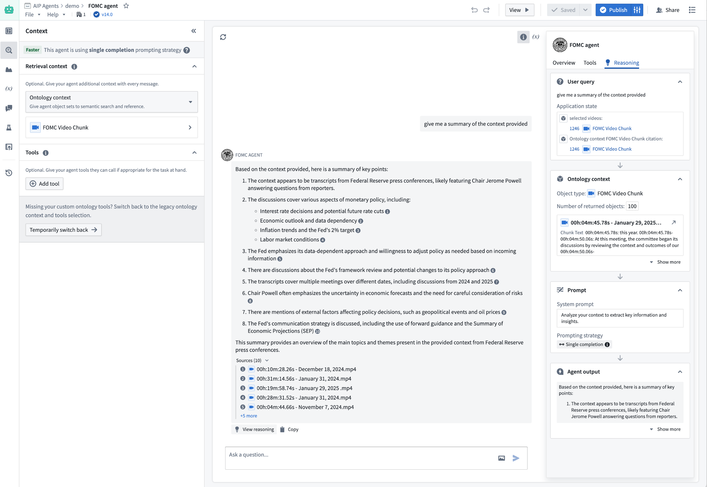
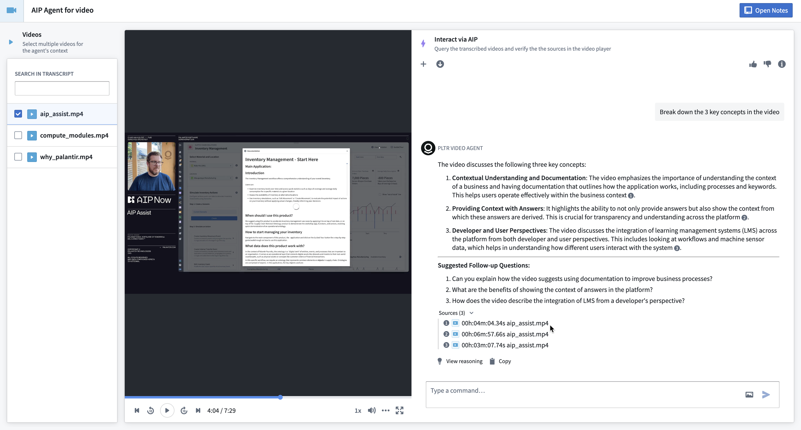

:::callout{theme="informational"} AIP Chatbot Studio was previously known as AIP Agent Studio, and AIP Chatbots were previously known as AIP Agents. :::
AIP Chatbot Studio allows users to build interactive assistants, known as AIP Chatbots, that are equipped with enterprise-specific information and tools, deployable internally in the platform and externally through the Ontology SDK and platform APIs.
Chatbots built in AIP Chatbot Studio are powered by large language models (LLMs), the Ontology, documents, and custom tools. AIP Chatbots can be integrated into applications to facilitate dynamic, context-aware read and write workflows that enable you to automate tasks and reduce manual application interactions.
The following example shows an AIP Chatbot that uses an application variable to take a filtered object set of video transcripts as context when answering user questions about the recent press conference from the Federal Reserve.

The above AIP Chatbot can also be deployed in a Workshop application that enables users to interact with the selected video.

AIP Chatbot Studio is built on the same rigorous security model that governs the rest of the Palantir platform. These platform security controls grant an LLM access only to what is necessary to complete a task.